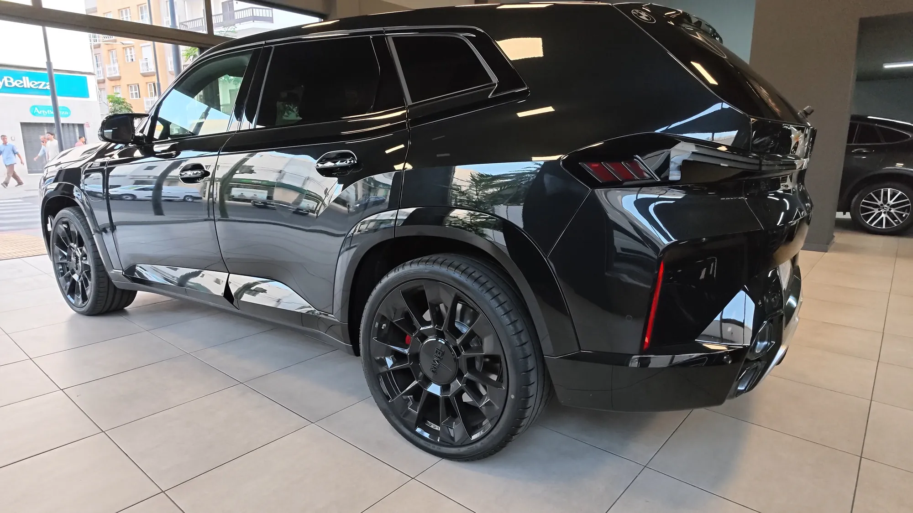

Jul 2026

Guía
Por qué comprar un coche de lujo seminuevo en vez de nuevo
La depreciación más fuerte de un coche nuevo ocurre en sus primeros años. Por qué un seminuevo con historial verificado da acceso a más coche por el mismo presupuesto.